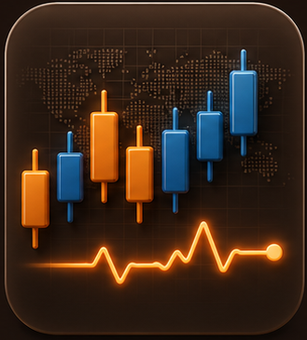
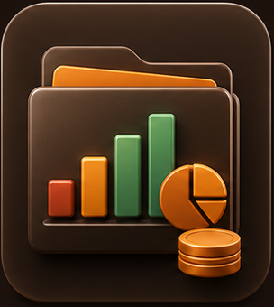
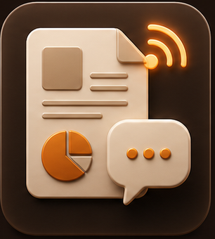
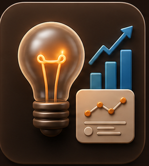
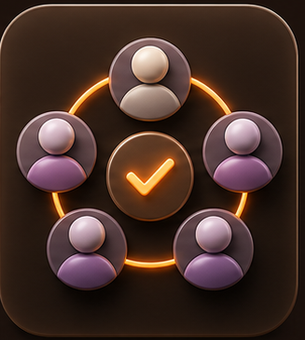
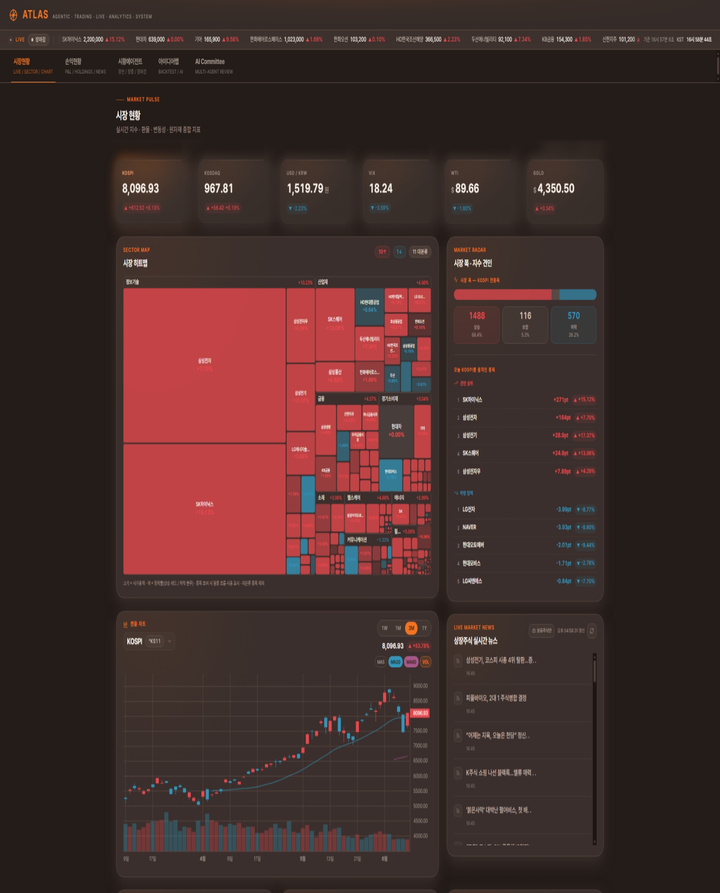

VIBE CODING COMPETITION 2026
AI INVESTMENT DESK OS
ATLAS
Multi Agent를 활용한 주식 운용 플랫폼
보험사 주식운용역의 하루를 시장 및 손익 모니터링, 시황 분석, 신규 투자아이디어까지 하나의 플랫폼으로 압축
AGENTIC
TRADING
LIVE
ANALYTICS
SYSTEM
VIBE CODING COMPETITION 2026 · 한화손해보험ATLAS
ㅡTHE PROBLEM
제 책상 위에는 오늘도
7개의 모니터가 켜져있습니다.
7개의 모니터가 켜져있습니다.
시장 데이터, 종목 차트, 리서치 리포트, 손익 현황.
주식 운용 관련 업무는 여러 대의 모니터 사이를 오가며 진행됩니다.
주식 운용 관련 업무는 여러 대의 모니터 사이를 오가며 진행됩니다.
ATLAS02
ㅡTHE PROBLEM
하나의 판단을 위해 필요한 정보가
여러 화면에 흩어져 있습니다
여러 화면에 흩어져 있습니다
MARKET시장 데이터
CHART종목 차트
P&L손익 현황
RESEARCH리서치 리포트
DISCLOSURE뉴스·공시
REPORT보고서 작성
IDEA아이디어·AI
?
운용 판단
ATLAS03
ㅡTHE SOLUTION
ATLAS — 에이전트로 굴러가는 운용 데스크
여러 AI 에이전트가(Agentic) 주식운용을(Trading)
실시간 데이터 위에서(Live) 분석하는 (Analytics) 하나의 통합 시스템 (System)
실시간 데이터 위에서(Live) 분석하는 (Analytics) 하나의 통합 시스템 (System)
A
Agentic
에이전트가 운용역을 보조
T
Trading
트레이딩 아이디어 제시 및 백테스팅
L
Live
실시간 시세·경제 지표
A
Analytics
포트폴리오 분석 및 신규 투자 검토
S
System
5탭을 하나의 시스템으로
ATLAS04
05
PRODUCT
하나의 화면,
다섯 개의 탭
다섯 개의 탭
시장현황 · 손익현황 · 시황에이전트 · AI 아이디어랩 · AI투자위원회
ATLAS05
ㅡPRODUCT — OVERVIEW
5탭, 끊김 없는 한 동선

01
시장현황
실시간 시세·KPI·캔들

02
손익현황
보유·손익·위험지표

03
시황에이전트
장전·장중·장마감 A4 PNG

04
AI 아이디어랩
투자 아이디어 발굴

05
AI투자위원회
개별종목 심층리서치
ATLAS06
ㅡTAB 01 — 시장현황

시장현황 · Pulse / Heatmap / Chart / News시장 전체에서 종목까지,
클릭으로 연결됩니다
클릭으로 연결됩니다
홈 탭은 지수·경제지표를 보는 데서 끝나지 않고, 섹터 히트맵과 전종목 검색, 캔들차트, 뉴스/공시까지 같은 종목 맥락으로 이어집니다.
MARKET PULSE
지수·환율·변동성
KOSPI·KOSDAQ·USD/KRW·VIX·WTI·금
SECTOR HEATMAP
업종별 등락
섹터 클릭 → 관련 종목 흐름으로 이동
CANDLE LINK
지수·종목 차트
테이블·Movers·히트맵 선택과 차트 연동
SEARCH · RADAR
전종목 검색
상승/하락 분포와 지수 기여 상·하위
뉴스·DART 공시까지 붙어, “왜 움직였는지”를 같은 화면에서 확인합니다.
ATLAS07
ㅡTAB 02 — 손익현황
투자 포트폴리오의
다차원 성과 진단
다차원 성과 진단
실시간 시장 데이터와 보유 종목 현황을 유기적으로 연계하여 포트폴리오 가치를 다각도로 평가하고, 벤치마크(BM) 대비 위험조정 성과 지표를 명확한 산식 및 근거 데이터와 함께 체계적으로 제시합니다.
초과수익
추적오차 TE
MDD
베타
정보비율 IR
연율변동성
1,000억원
평가 포트폴리오 규모 (예시)
vs BM
초과수익·IR·TE 리베이스 곡선
ATLAS09
ㅡTAB 03 — 시황에이전트
실시간 시장 지표 분석부터 A4 리포트 자동 생성 및 즉시 발송까지
장전
08:30
글로벌 마감 동향 요약
개장 전 매크로 촉매 스캔
개장 전 매크로 촉매 스캔
장중
10:30
장중 실시간 수급 추적
업종별 상대강도(RS) 분석
업종별 상대강도(RS) 분석
장마감
15:30
당일 종합 수급 해설
익일 투자 시각 및 관전 포인트
익일 투자 시각 및 관전 포인트
지능형 다중 지표 연동 — 변동성, ADR, 수급, RS를 종합 분석하여 시장 변동의 구체적 원인을 해설
자동 배포 및 보관 최적화 — 매일 텔레그램 자동전송 및 히스토리 아카이빙에 용이한 이미지 기반 고화질 자동 문서화
ATLAS10
ㅡTAB 04 — AI 아이디어랩 (Top-Down)
AI 에이전트 리서치팀이
지금 시장 국면에 맞는 섹터와 종목을 찾는다
지금 시장 국면에 맞는 섹터와 종목을 찾는다
01
뉴스·매크로 조사
뉴스 큐레이터, Macro PM이 금리·지수 환경과 테마 스캔
02
섹터 토론
Bull/Bear 리서처 에이전트 간의 팽팽한 논리 대립 및 강약세 검증
03
리스크 심의
리스크 매니저가 유망 종목의 하방 리스크 및 변동성 정량 분석
04
PM 의장 합의·제안
검증된 종합 지표를 취합하여 PM 의장 주도 하에 최종 포트 편입 후보군 합의 및 제안
ATLAS14
ㅡTAB 04 — AI 아이디어랩 실행 결과
AI 아이디어랩 실제 운용 화면 (예시)

ATLAS15
ㅡTAB 05 — AI투자위원회 (Bottom-Up)
14
개 전문 에이전트의
개별 종목 분석
개별 종목 분석
바텀업 관점에서 개별 종목에 대해 강세(Bull) · 약세(Bear) · 리스크 관점을 분리해 다각도로 심층 검증하고 합의 의견을 도출합니다.
01
조사
기술·재무·뉴스·심리 데이터 수집 및 다각도 기초 리서치
02
토론
상반된 Bull/Bear 리서처 간의 논리 충돌 및 교차 토론
03
심의
다차원 하방 리스크 시뮬레이션 및 변동성 정밀 심의
04
최종 합의
참여 위원 합의 기반의 포트폴리오 편입 및 최종 제안
ATLAS16
ㅡTAB 05 — AI투자위원회 최종 보고서
AI투자위원회 최종 심의 결과 (예시)

ATLAS17
ㅡSYSTEM & DATA TRUST
안정적인 의사결정 인프라와 신뢰할 수 있는 데이터 통합
SYSTEM ARCHITECTURE
FRONTEND
React 19 · TypeScript · Vite
Tailwind CSS 기반의 고성능 사용자 인터페이스. REST API 호출 및 SSE(Server-Sent Events)를 활용한 실시간 데이터 스트리밍.
BACKEND
FastAPI · Python 3.9
비동기 서버 기반의 실시간 포트폴리오 데이터 가공. 평가·손익 지표의 즉각적인 연동 및 과거 시세 통계 파이프라인.
COMMITTEE ENGINE
다중 에이전트 합의 엔진 Multi-Agent System
Codex, Claude Code, Antigravity CLI를 사용하여 개발하고 내장 LLM 모델로 Mimo V2.5를 채택. 14개 전문 에이전트의 다차원 분석 결과 종합 및 실시간 토론·합의 알고리즘 구동.
DATA SOURCES
네이버 금융 · pykrx API
국내 주식 시장의 실시간 호가 정보, 일별 OHLCV 가격 데이터 및 과거 시뮬레이션용 데이터 적재.
yfinance 글로벌 피드
주요 거시 경제 지표(환율, VIX 변동성 지수, WTI 유가, 금 가격 등) 및 해외 주식/지수 데이터 수집.
실시간 포트폴리오 데이터
보유 자산 현황의 실시간 평가 및 손익·위험 지표 연산을 위한 포트폴리오 시뮬레이션 데이터 피드.
Google News API · DART 공시 정보
실시간 언론 보도 텍스트 수집 및 기업 공시 정보 파싱. 감성 분석 에이전트의 시장 오피니언 분석 입력원.
COMPLIANCE
내부 참고용 보조도구
본 화면 및 자료에서 제공되는 AI 생성 결과는 실시간 데이터 상태 및 거대 언어 모델(LLM)의 비결정성적 특성에 따라 일부 오차가 발생할 수 있습니다. 과거 시뮬레이션 결과(백테스트)가 미래의 수익을 보장하지 않으므로, 최종적인 투자 의사결정과 이에 따른 모든 책임은 해당 업무를 담당하는 전문 운용역의 판단 하에 진행되어야 합니다.
ATLAS18
ㅡEXPECTED IMPACT
운용역의 아침이 달라집니다
BEFORE · 08:20
4개 앱 + 3개 엑셀
수동 취합
수동 취합
08:20단말·HTS·엑셀·리포트 각각 오픈
08:35KOSPI·섹터 수동 정리, 간밤 뉴스 탐색
08:55손익 현황 엑셀 갱신 후 시황 메모 작성
09:00장 시작 — 신규 투자 아이디어의 다각도 검증 시간 부재
→
AFTER · 08:20
ATLAS 하나,
한 동선
한 동선
08:20ATLAS 오픈 — 전일 종가 기준 현재 손익상태 분석 및 보고
08:30미국 마감 시황 자동 생성 — 글로벌 이슈 탐독 및 금일 국내 시장 예측
08:40AI 아이디어랩 — 섹터랭킹·타이밍 기반 투자 아이디어 도출
08:52위원회 소집 — 14개 전문 에이전트의 다차원 심의 시작
7화면 → 1화면운용역 아침 루틴 전체를 단일 동선으로
시황 서술 자동화VKOSPI·수급·RS 실데이터 기반 인과 브리핑
아이디어 발굴 가속레짐→섹터→타이밍→딥다이브 한 탭 연결
판단 근거 누적위원회 결정 + 히스토리 아카이브 자동 저장
ATLAS19
ONE SYSTEM FOR THE DESK
시장 · 손익 · 시황 · 아이디어
하나의 통합 시스템으로 완성하다.
하나의 통합 시스템으로 완성하다.
한화손해보험 주식운용을 위한 Agentic AI 통합 데스크, ATLAS.
EFFICIENCY
아침 루틴의 7개 개별 화면을 단일 통합 동선으로 최적화하여 운용 효율성 극대화.
INTELLIGENCE
Mimo V2.5 엔진 및 14개 전문 에이전트의 교차 검증으로 신뢰도 높은 최적의 투자 의사결정 지원.
ATLAS